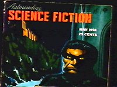
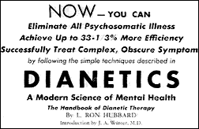
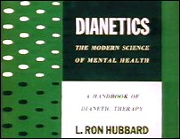

PART THREE:
THE BRIDGE TO TOTAL FREEDOM
1949-1966
Let us suppose that two plateaus exist, one
higher than the other, with a canyon between them. An engineer sees that if the canyon
could be crossed by traffic, the hitherto unused plateau, being much more fertile and
pleasant, would become the scene of a new culture. He sets himself the task of building a
bridge.
L. RON HUBBARD, Dianetics:
The Modern Science of Mental Health
CHAPTER ONE
Building the Bridge
In December 1949, an announcement appeared in
America's leading science fiction magazine:
The item that most interests me at the moment
is an article on the most important subject conceivable. This is not a hoax
article. It is an article on the science of the human mind, of human thought. It
is not an article on psychology - that isn't a science. It's not General Semantics. It is
a totally new science, called dianetics, and it does precisely what a science
of thought should do. Its power is almost unbelievable; following the sharply defined
basic laws dianetics sets forth, physical ills such as ulcers, asthma and arthritis can be
cured, as can all other psychosomatic ills. The articles are in preparation. It is, quite
simply, impossible to exaggerate the importance of a true science of human thought.
On the facing page was a story by the originator of
Dianetics, called "A Can of Vacuum." It is about an unschooled practical joker
who makes remarkable scientific discoveries, for example that of "a quart of rudey
rays." The magazine was Astounding Science Fiction, and editor John
Campbell's article was the first mention in print of Dianetics.
The first Hubbard article on Dianetics was published
in the Spring of 1950, in an unusual place for a "science of the mind," The
Explorers Club Journal, under the title "Terra Incognita: The Mind." In the
article Hubbard explained that Dianetics "was intended as a tool for the expedition
commander and doctor who are faced with choosing personnel and maintaining that personnel
in good health."
Hubbard had arrived in Bay Head, New Jersey, in
mid-1949, armed with the fundamentals of his new science. He was widely known in science
fiction, having contributed to Astounding Science Fiction for over eleven years.
John Campbell, the highly influential editor, had been convened to Dianetics by a
counselling session which relieved his sinusitis, and became an eager recruiter. Soon, a
small group of disciples gathered around Hubbard.
Among those brought into the Hubbard circle by
Campbell was Joseph Winter, M.D., who had written medical articles for Astounding.
Winter wanted to break down the mystique surrounding medicine. He specialized in
endocrinology, and had tried to modify behavior with hormones, in experiments at the
University of Illinois. Hubbard was later to claim that he had himself been involved in
such experiments at Oak Knoll Hospital. An early letter to Winter, written in July 1949,
shows Campbell's enthusiasm for the new subject:
With cooperation from some institutions, some
psychiatrists, he [Hubbard] has worked on all types of cases. Institutionalized
schizophrenics, apathies, manics, depressives, perverts, stuttering, neuroses - in all
nearly 1,000 cases .... He doesn't have proper statistics .... He has cured every patient
he worked. He has cured ulcers, arthritis, asthma.
Winter wrote to Hubbard asking for more information
about Dianetics. Hubbard replied that he was writing a technical paper and in the fall of
1949 sent a treatise on "Abnormal Dianetics" to Dr. Winter, who was so impressed
that he gave copies to two colleagues in Chicago. Winter was disappointed when his
colleagues pointed to the shortcomings of Dianetics without first trying it out.
Winter visited Hubbard in Bay Head in October 1949,
later saying he "became immersed in a life of Dianetics and very little else."
By January 1950, Winter had closed his medical practice in Michigan and moved to New
Jersey.
Winter, Campbell, Hubbard and Don Rogers, an
electrical engineer, worked together refining techniques and coining a new language to
voice Hubbard's ideas. Hubbard was probably the major contributor to these discussions,
and certainly the final arbiter. Winter submitted papers to the Journals of the American
Medical Association and the American Psychiatric Association. The papers were rejected,
because of a lack of clinical experimentation, or indeed of any substantiation. The Bay
Head group then decided to publish the therapy in Astounding Science Fiction, and
by January 1950, Hubbard had prepared an article, a modified version of which later became
the book Dianetics: The Evolution of a Science. Unbeknownst to his co-workers,
while they were refining Hubbard's cure-all, he was still trying to obtain a naval
disability retirement to augment his Veterans Administration award.
In 1950, Astounding Science Fiction had a
circulation of approximately 150,000. Its most noteworthy subscriber was Albert Einstein.
The letters pages often carried correspondence from research scientists and professors,
disputing the feasibility of previous stories (including criticisms of the poor scientific
understanding displayed in Hubbard's stories). Campbell continued to praise Dianetics in
his editorials, generating considerable interest in the subject without giving away
anything substantial concerning Dianetic methods.
Arthur Ceppos, the head of a medical and psychiatric
textbook publishing company, joined the Bay Head circle, and commissioned a manual on
Dianetics. In April 1950, the Hubbard Dianetic Research Foundation (HDRF) was incorporated
to answer the many inquiries generated by Campbell's editorials. Hubbard, his wife Sara,
Campbell, Winter, Ceppos, Don Rogers, and lawyer Parker C. Morgan made up the Board of
Directors. The HDRF had its headquarters in Elizabeth, New Jersey, not far from New York
City.
Hubbard's 400-page textbook was outlined and written
in six weeks. He sometimes claimed it took him only three, and an eyewitness has confirmed
this, saying the first three weeks were spent working out how to write the book.
The writing process was punctuated, on March 8, by the
birth of a daughter to Sara Hubbard. The child, Alexis Valerie Hubbard, had her father's
red hair, though he later denied paternity, suggesting she was Jack Parson's child! 1 She was delivered by Joseph Winter.
 The May 1950 edition of Astounding (right) sold
out at record rate. It was soon followed by the book Dianetics: The Modern Science of
Mental Health, which became an immediate best-seller. The Hubbard Dianetic Research
Foundation was inundated with inquiries and requests for therapy.
Dianetics was supposed to "Clear" people of
irrational behavior. A "Clear," according to the book, would have no
compulsions, repressions, or psychosomatic ills. A "Clear" would have full
control of his imagination, and a near perfect memory. With Dianetic counselling, IQ would
"soar" by as much as "fifty points," and the Clear would be
"phenomenally intelligent." Dianetics would even rescue a broken marriage.
It was claimed that through Dianetics the individual
would be freed of psychoses and neuroses. Among the "psychosomatic" conditions
Dianetics claimed to cure were asthma, poor eyesight, color blindness, hearing
deficiencies, stuttering, allergies, sinusitis, arthritis, high blood pressure, coronary
trouble, dermatitis, ulcers, migraine, conjunctivitis, morning sickness, alcoholism and
the common cold. Even tuberculosis would be alleviated. Dianetics would also have "a
marked effect upon the extension of life." A Clear could do a computation which a
"normal would do in half an hour, in ten or fifteen seconds."
 Hubbard claimed to have examined and treated 273 people and, through this
research, found the "single and sole source of aberration." The book claimed
that Dianetics was effective on anyone who had not had "a large portion of his brain
removed," or been "born with a grossly malformed nervous structure." Better
yet, Dianetics could be practiced straight from the book with no training. Therapy would
take anything from 30 to 1,200 hours, by which time the person would be Clear, and thus
free of all irrationality, and every psychosomatic ailment.
The new therapy which prompted these incredible claims
was basically a reworking of ideas abandoned by Freud in favor of the interpretation of
dreams. Dianetics extended Freud's earlier techniques slightly, and allied them to a
different theory. It was a form of abreaction in which the patient remembered and then
acted out, or supposedly re-experienced, the memory of a traumatic incident. Freud had
speculated that traumas with similar content join together in "chains," embedded
in the "unconscious" mind, causing irrational responses in the individual.
According to Freud a "chain" would be relieved by inducing the patient to
remember the earliest trauma, "with an accompanying expression of emotion."
Earlier traumas would only become available as later traumas were remembered and
abreacted. Forty years before Dianetics, in the Clark lectures at Worcester,
Massachusetts, Freud had explained this theory and methodology. The description is
uncannily similar to Dianetics.
Freud would repeat one of the patient's common phrases
to him. This would often induce a buried memory to surface. In Dianetics, the therapist
asked the patient to repeat the phrases. Hubbard called this "repeater
technique" and, in early Dianetics, it was the principal method for discovering
traumatic incidents.
Hubbard renamed the "unconscious" the
"Reactive Mind." He differentiated two principal types of trauma: "physical
pain or unconsciousness," and "emotional loss." Before Dianetics
was published, three words had been tried out to describe the first type of trauma: norn,
impediment and comanome. Eventually, Dr. Winter suggested that a word already current
would fit the bill. The word was "engram," defined in Dorland's 1936 Medical
dictionary as "a lasting mark or trace .... In psychology it is the lasting trace
left in the psyche by anything that has been experienced psychically; a latent memory
picture." Hubbard limited the term to actual pain or unconsciousness, separating out
emotional losses as "secondary engrams" or "secondaries," meaning they
were only stored where an earlier, similar "engram" existed. Freud too had
commented on trauma based on both physical pain and emotional loss. 2
So, according to Hubbard, the "Reactive
Mind" is composed of recordings of incidents of physical pain or unconsciousness
called "engrams." The earliest engram (or "basic") is the foundation
of a "chain" of engrams, and through re-experiencing it, the "chain"
will dissipate. To make an earlier engram available it is necessary to
"destimulate" more recent engrams by re-experiencing them.
Hubbard claimed it was possible to relieve all such
engrams, thus "erasing" the Reactive (unconscious) Mind. A person without a
Reactive Mind would be "Clear." To make a Clear, it would be necessary to erase
the earliest engram by re-experiencing it. Hubbard asserted that the engram of birth was
very important, and claimed it was possible, and necessary, to find the earliest engram,
long before birth, perhaps as far back as conception, the "sperm dream."
 A year before Hermitage House published Dianetics: The Modern Science of
Mental Health (right), it published an extensive psychoanalytic study by Dr.
Nandor Fodor, called The Search for the Beloved, subtitled "A clinical
investigation into the trauma of birth and prenatal conditioning." Fodor credited
Otto Rank, another Freudian, with original work on the trauma of birth.
Someone at the publishers must have noticed the
similarities between the two books prior to the publication of Dianetics. Arthur
Ceppos was both the head of Hermitage House and a director of the Hubbard Dianetic
Research Foundation. It is highly unlikely that Hubbard did not know about Fodor, even
though his book was certainly not as popular as Dianetics. Fodor did publish
first, and had been expressing his ideas on the trauma of birth in psychiatric journals
for some years. The first edition of Dianetics: The Modern Science of Mental Health
even carried an advertisement for Fodor's book on the dust-jacket, subtitle and all.
Fodor and Hubbard each argued that birth and the
pre-natal period could be abreacted, or re-experienced, and were fundamental to later
behavior. Scientologists mistakenly credit Hubbard with the discovery of the trauma of
birth and the pre-natal period. Hubbard did nothing to disabuse them of this notion.
Although Fodor's patients supposedly relived their birth, his method differed from
Hubbard's. Dianetics was closer to Freud's original approach. Fodor believed that very few
people were able to reexperience their birth, whereas Hubbard claimed nearly everyone
could.
Using hypnosis, Hubbard tried out some of Freud's
ideas, and eventually came up with a "non-hypnotic" therapy, a few months before
Dianetics: The Modern Science of Mental Health was published. Hypnosis, which
already had a Hollywood Svengali image, was to be given an even more vicious, mind-bending
image by Hubbard. To this day many people think that hypnosis refers only to a state of
deep-trance. In that sense, Dianetics is not hypnosis, but Dr. Winter and others were
later to argue that Dianetics creates a light trance, a highly suggestible condition.
In Dianetics: The Modern Science of Mental Health,
Freudian ideas were presented in a new, elaborate language. Dianetics, a survivor of
several abreactive therapies practiced in the 1940s, differed by approaching the general
public directly, rather than through the psychiatric or psychological professions.
Dianetics also completely avoided the libido theory, the interpretation of dreams,
transference and complex Freudian evaluations. The early Dianeticist simply directed the
individual in the exploration of his memory and, inevitably, his imagination, leaving the
individual (or "Preclear") to make his own interpretations about the validity or
significance of his memories.
According to Dianetics: The Modern Science of
Mental Health ("DMSMH," as Scientologists call the book), an
engram contains every "perceptic' ' - sight, smell, touch, taste, sound and so forth.
It is a running, three-dimensional record of experiencing during moments of
unconsciousness or pain which acts as a post-hypnotic suggestion on the recipient. He has
no real idea why he reacts irrationally in certain circumstances, but rationalizes his
responses.
In the book Hubbard described an engram and its
effects:
A woman is knocked down by a blow. She is
rendered "unconscious." She is kicked and told she is a faker, that she is no
good, that she is always changing her mind. A chair is overturned in the process. A faucet
is running in the kitchen. A car is passing on the street outside. The engram contains a
running record of all these perceptions... [and would contain] the whole statement made to
her .... Any perception in the engram she received has some quality of restimulation.
Running water from a faucet might not have affected her greatly. But running water from a
faucet plus a passing car might have begun some slight reactivation of the
engram, a vague discomfort in the areas where she was struck and kicked . . . add the
sharp falling of a chair and she experiences a shock of mild proportion. Add now the smell
and voice of the man who kicked her and the pain begins to grow. The mechanism [the
Reactive Mind] is telling her she is in dangerous quarters, that she should leave . . .
She stays. The pains in the areas where she was abused become a predisposition to illness
or are chronic illness in themselves.
The experiential content of the engram is outside
conscious recall except, of course, when probed by the Dianeticist. When enough elements
of the environment match elements of an engram, then it, and all engrams similar to it
(the "chain" to which it belongs), comes into force, or "key-in." The
individual must either feel the pain of the engram, or "dramatize" (act out) the
often inappropriate verbal content. An engram which contained the phrase "Get
out!" might well create an escapist. The Reactive Mind is literal and puns crazily.
Hubbard called the sequential record of experience the
"Timetrack." In Dianetics, he claimed that by finding the earliest engram on a
chain the whole chain would refile in the "Analytical" (conscious) mind, losing
its reactive power. So came the idea that finding the earliest engram
("basic-basic"), and thoroughly re-experiencing its content, will knock away the
foundation of all later engrams, emptying the Reactive Mind, and creating a Clear.
A rather peculiar aspect of Dianetics: The Modern
Science of Mental Health was Hubbard's emphasis on "attempted abortions."
Hubbard claimed "it is a scientific fact that abortion attempts are the most
important factor in aberration," and that "Attempted abortion is very common
.... Twenty or thirty abortion attempts are not uncommon in the aberree." Hubbard
asserted that ulcers were caused by attempted abortions. He had been suffering from a
duodenal ulcer since 1943.
Going against popular belief, Hubbard insisted that
life in the womb was fraught with pain and that the fetus is constantly receiving engrams.
Hubbard gave a gruesome list, which he claimed was from a real case: Coitus chain, father
fifty-seven incidents; Coitus chain, lover nineteen incidents; Constipation chain
fifty-two incidents; Douche chain twenty-two incidents; Morning sickness chain
twenty-three incidents; Fight chain thirty-eight incidents; Attempted abortion chain
twenty-eight incidents; Accident chain eighteen incidents; Masturbation chain eighty-one
incidents. This unfortunate individual had received over 300 engrams before coming into
the world.
In Scientology: The Now Religion, author
George Malko wrote that "Hubbard's extensive discussion of things sexual, his concern
with abortions, beatings, coitus under duress, flatulence which causes pressure on the
foetus, certain cloacal references, all suggest to me a fascination which borders on the
obsessive, as if he possessed a deep-seated hatred of women. All of them are being beaten,
most of them prove to be unfaithful, few babies are wanted." 3
Dianetic counselling was called "auditing."
Hubbard defined the verb "audit" as "to listen and compute," which he
considered the basic functions of the therapist. So the Dianetic therapist was called the
"Auditor."
In Dianetics: The Modern Science of Mental Health,
Hubbard used the analogy of building a bridge. He had built a bridge to a better state for
mankind, pleading with his readers "For God's sake, get busy and build a better
bridge!" To Scientologists, the steps of Hubbard's therapy are still known as
"The Bridge."
The original idea in Dianetics was that the Reactive
Mind could be completely "erased," thus turning Homo sapiens into the new man,
"Homo novus," the Clear. Otherwise the basic theory was not original, and the
therapy a modification of earlier techniques. Dianetics was initially successful because
it was so readily accessible, and because it was espoused by a brilliant publicist, John
Campbell. All the reader needed was a copy of the book and a friend to
"co-audit" with, and they could start erasing their engrams. Amateur Dianetic
groups sprang up throughout the English-speaking world.
In June 1950, Hubbard gave the first full-time Auditor
training course to ten students at the Elizabeth Foundation. Hubbard said students there
were charged $500 to "hang around the office and watch what was going on" for a
month. August found him in California, where he lectured for a month to 300 students. The
fee was still $500. Professional auditing was charged at $25 an hour. There were hundreds
of thousands of dollars involved. 4
Dianetics emerged against a backdrop of international
tension and fear. Russia had added Czechoslovakia to its empire in 1948. The United States
had reintroduced the draft. 1948 also saw the Soviet blockade of Berlin, and the U.S.
airlift. In September 1949, the Soviets successfully tested an atomic bomb. The Communists
came to power in China, under Mao Tse-tung, the following month. At the beginning of 1950,
Senator Joseph McCarthy announced that he had a list of 205 card-carrying Communists in
the employ of the U.S. State Department. The McCarthy Communist witch-hunt was to last
four years. In June, the North Koreans, using Soviet arms and tanks, invaded the South,
and the Korean war began. In The New York Times, Frederick Schuman's review of Dianetics:
The Modern Science of Mental Health played to the fears of the United States of
America: "History has become a race between Dianetics and catastrophe," echoing
Hubbard's own sentiments.
In 1950, Dianetics was a craze. Campbell wrote that Astounding
was receiving up to a thousand letters a week. 5 Within a year, the book had sold 150,000 copies. The Hollywood
community eagerly embraced the new system. Aldous Huxley received auditing from Hubbard
himself, and, although he did not complain about the therapy, he simply could not locate
any engrams, even under Hubbard's direction. 6
FOOTNOTES
Additional sources: Winter, A
Doctor's Report on Dianetics; author's correspondence with a former HDRF director;
Hubbard, Dianetics: The Modern Science of Mental Health (1950 and passim);
Freud's Clark Lectures, published in Two Short Accounts of Psycho-Analysis
1. Exhibit 500-47, vol 12. p.
1946-7 of transcript of Church of Scientology of California vs. Gerald Armstrong,
Superior Court for the County of Los Angeles, case no. C 420153, p.24.
2. Freud, Studies in
Hysteria, vol 2
3. George Malko, Scientology:
The Now Religion (1970).
4. Technical Bulletins of
Dianetics & Scientology, vol. 1, pp. 14 & 22; van Vogt in California
Association of Dianetic Auditors Bulletin, vol. 17, no. 2
5. Astounding Science
Fiction, U.S. edition, August 1950.
6. Sybille Bedford, Aldous
Huxley, a Biography, vol. 2, pp. 116-7 (Collins and Chatto & Windus, London 1974) |